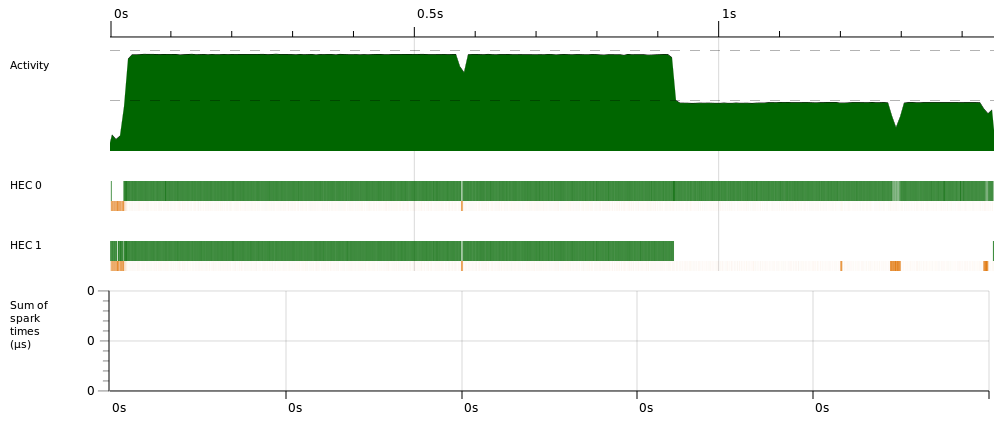

Sharing
> let y = (x,x)
> :sprint vv
y = (_,_)
> fst y
3
> :sprint vv
vv = (3,3)Evaluating fst vv evaluated x which was both first and second component (was shared)

Sharing
Parallelism and Concurrency
Marcin Benke
May 11, 2020
A parallel program is one that uses a multiplicity of computational hardware (e.g. multiple processor cores) in order to perform computation more quickly. Different parts of the computation are delegated to different processors that execute at the same time (in parallel), so that results may be delivered earlier than if the computation had been performed sequentially.
In contrast, concurrency is a program-structuring technique in which there are multiple threads of control. Notionally the threads of control execute “at the same time”; that is, the user sees their effects interleaved. Whether they actually execute at the same time or not is an implementation detail; a concurrent program can execute on a single processor through interleaved execution, or on multiple physical processors.
— Simon Marlow, Parallel and Concurrent Programming in Haskell
(recommended reading, free to read online)
Before discussing parallel evaluation, let’s look at Haskell evaluation in general
> let x = 1+2 :: Int
> :sprint x
x = _NB do not omit ::Int lest you get misled.
The :sprint command prints expression without evaluating; _ means “unevaluated” (thunk).
thunk
> let y = (x,x)
> :sprint vv
y = (_,_)
> fst y
3
> :sprint vv
vv = (3,3)Evaluating fst vv evaluated x which was both first and second component (was shared)
Sharing
> let x = 1+2 :: Int
> let y = x+1
> :sprint x
x = _
> :sprint y
y = _
> seq y ()
()
> :sprint y
y = 4
> :sprint x
x = 3seq a b sequentially evaluates a then returns b (without forcing it)
An example with lots of computation: solving Sudoku
Every line of input contains an instance of the problem
Sequential program:
$ ghc -O2 -threaded --make sudoku1.hs
$ ./sudoku1 sudoku17.1000.txt +RTS -s
TASKS: 3 (1 bound, 2 peak workers (2 total), using -N1)
SPARKS: 0 (0 converted, 0 overflowed, 0 dud, 0 GC'd, 0 fizzled)
Total time 2.53s ( 2.56s elapsed)
Alloc rate 973,110,877 bytes per MUT second
Productivity 96.0% of total user, 94.9% of total elapsedMeet Azor: 64 cores, 64GB mem
$ ghc -O2 -threaded --make sudoku1.hs
$ ./sudoku1 sudoku17.1000.txt +RTS -s
TASKS: 3 (1 bound, 2 peak workers (2 total), using -N1)
SPARKS: 0 (0 converted, 0 overflowed, 0 dud, 0 GC'd, 0 fizzled)
Total time 2.53s ( 2.56s elapsed)
Productivity 96.0% of total user, 94.9% of total elapsed$ ./sudoku1 sudoku17.1000.txt +RTS -s -N16
TASKS: 18 (1 bound, 17 peak workers (17 total), using -N16)
SPARKS: 0 (0 converted, 0 overflowed, 0 dud, 0 GC'd, 0 fizzled)
Total time 16.84s ( 4.09s elapsed)
Productivity 51.8% of total user, 213.1% of total elapsedOur program works slower - we unnecessarily start N-1 additional threads that only get in the way.
Eval monad - computation strategies-- Control.Parallel.Strategies
data Eval a
instance Monad Eval
runEval :: Eval a -> a
rseq :: a -> Eval a -- "in this thread"
rpar :: a -> Eval a -- "in a new thread"Calling a lazy function in a new thread does not have much sense (why?)
We need to control the evaluation somehow.
deepseq: fully evaluates the first argument, before returning the second.
seq :: a -> b -> b
-- Control.DeepSeq
class NFData a where
rnf :: a -> ()
-- rnf should reduce its argument to normal form
-- (that is, fully evaluate all sub-components),
-- and then return '()'
-- Default implementation
rnf a = a `seq` ()
deepseq :: NFData a => a -> b -> b
deepseq a b = rnf a `seq` b
force :: NFData a => a -> a
force x = deepseq x x
-- Control.Exception
-- Forces its argument to be evaluated to weak head normal form
-- when the resultant IO action is executed.
evaluate :: a -> IO aseq forces ``shallow’’ evaluation (just the root)
deepseq forces the whole tree up to the leaves.
> let x = [undefined] :: [Int] in x `seq` length x
1
> let x = [undefined] :: [Int] in x `deepseq` length x
*** Exception: Prelude.undefinedimport Control.Parallel.Strategies -- cabal install parallel
main :: IO ()
main = do
[f] <- getArgs
grids <- fmap lines $ readFile f
-- print (length (filter isJust (map solve grids)))
let (as,bs) = splitAt (length grids `div` 2) grids
print (length (runEval (work as bs)))
work as bs = do
a <- rpar (force (map solve as))
b <- rpar (force (map solve bs))
return (filter isJust (a++b))We create two light threads, in GHC called ``sparks’’ (these are not OS threads).
$ ghc -O2 -rtsopts -threaded --make sudoku2.hs
$ ./sudoku2 sudoku17.1000.txt +RTS -N2 -s -RTS
TASKS: 4 (1 bound, 3 peak workers (3 total), using -N2)
SPARKS: 2 (1 converted, 0 overflowed, 0 dud, 0 GC'd, 1 fizzled)
Total time 2.73s ( 1.77s elapsed)
Productivity 91.1% of total user, 140.4% of total elapsedBetter, but we are still unable to use the whole power:
./sudoku2 sudoku17.1000.txt +RTS -N16 -s -RTS
TASKS: 18 (1 bound, 17 peak workers (17 total), using -N16)
SPARKS: 2 (1 converted, 0 overflowed, 0 dud, 0 GC'd, 1 fizzled)
Total time 15.12s ( 3.19s elapsed)
Productivity 55.2% of total user, 261.7% of total elapsedA new spark is created with each use of rpar (and put in the spark pool)
Whenever the system has a free computational unit (processor, core), it allocates it a new spark from the pool (“convert”)
Computational unit - Haskelll Execution Context (HEC)
One unit always occupied by the main thread.
Spark creation may fail due to
pool overflow
expression in WHNF already (dud)
sparks in the pool may be
“converted” (allocated a HEC)
evaluated out of order (fizzle)
garbage collected (GC)

spark lifecycle
SPARKS: 2 (1 converted, 0 overflowed, 0 dud, 0 GC'd, 1 fizzled)
Total time 2.73s ( 1.77s elapsed)
Productivity 91.1% of total user, 140.4% of total elapsedProductivity better, but still far from ideal.
ghc -eventlogprog yields prog.eventlog$ ./sudoku2 sudoku17.1000.txt +RTS -N2 -ls
$ threadscope sudoku2.eventlog &
$ ~/.cabal/bin/threadscope sudoku2.eventlog &
Parallel map: process list elements in parallel
parMap :: (a -> b) -> [a] -> Eval [b]
parMap f [] = return []
parMap f (a:as) = do
b <- rpar (f a)
bs <- parMap f as
return (b:bs)Evaluation:
$ ./sudoku3b sudoku17.1000.txt +RTS -N2 -s -RTS
TASKS: 4 (1 bound, 3 peak workers (3 total), using -N2)
SPARKS: 1000 (1000 converted, 0 overflowed, 0 dud, 0 GC'd, 0 fizzled)
Total time 2.84s ( 1.49s elapsed)
Productivity 88.9% of total user, 169.6% of total elapsedBetter productivity, easier to scale:
sudoku2b
-N8: Productivity 71.0% of total user, 169.2% of total elapsed
N16: Productivity 53.5% of total user, 252.6% of total elapsed
sudoku3b
-N8: Productivity 78.5% of total user, 569.3% of total elapsed
N16: Productivity 62.8% of total user, 833.8% of total elapsed
N32: Productivity 43.5% of total user, 1112.6% of total elapsed

Additional abstraction layer built upon the Eval monad
type Strategy a = a -> Eval
rseq :: Strategy a
rpar :: Strategy a
r0 :: Strategy a
r0 x = return x
rdeepseq :: NFData a => Strategy a
rdeepseq = rseq(deep x)
using :: a -> Strategy a -> a
x `using` s = runEval (s x)The advantage is that using s can be removed (almost) without changing semantics (at worst, the program will be ``more defined’’)
Although the sparks are really cheap, one should not create too many of them
parFib n | n < 2 = n
parFib n = p `par` q `pseq` (p + q)
where
p = parFib $ n - 1
q = parFib $ n - 2
main :: IO ()
main = print $ parFib 40@azor:
./badfib +RTS -N2 -s -RTS
SPARKS: 165597322 (16 converted, 14860689 overflowed, 0 dud,
150628741 GC'd, 107876 fizzled)
Total time 7.18s ( 3.65s elapsed)
Productivity 71.8% of total user, 141.5% of total elapsed
N60:
SPARKS: 190193153 (61919 converted, 2556576 overflowed, 0 dud,
140401503 GC'd, 47173155 fizzled)
Total time 65.95s ( 1.28s elapsed)
Productivity 47.8% of total user, 2461.5% of total elapsedspark lifecycle
cutoff :: Int
cutoff = 20
parFib n | n < cutoff = fib n
parFib n = p `par` q `pseq` (p + q)
where
p = parFib $ n - 1
q = parFib $ n - 2
fib n | n<2 = n
fib n = fib (n - 1) + fib (n - 2)./parfib +RTS -N60 -s -RTS
SPARKS: 118393 (42619 converted, 0 overflowed, 0 dud,
11241 GC'd, 64533 fizzled)
Total time 17.91s ( 0.33s elapsed)
Productivity 98.5% of total user, 5291.5% of total elapsed
-N60, cutoff=15
SPARKS: 974244 (164888 converted, 0 overflowed, 0 dud,
156448 GC'd, 652908 fizzled)
Total time 13.59s ( 0.28s elapsed)
Productivity 97.6% of total user, 4746.9% of total elapsedRewrite parFib using the Eval monad
Ditto using Strategies
Check what cutoff values are best for different parallelism factors
Try out other strategies
$ ghc -O2 -threaded -eventlog --make badfib.hs
$ ./badfib +RTS -N2 -ls
$ ~/.cabal/bin/threadscope badfib.eventlog
threadscope:badfib
$ ghc -O2 -threaded -eventlog --make parfib.hs
$ ./parfib +RTS -N2 -ls
$ ~/.cabal/bin/threadscope parfib.eventlogthreadscope:badfib
Write a function putting n queens on n*n chessboard
sequential
parallel
type PartialSolution = [Int]
type Solution = PartialSolution
type BoardSize = Int
queens :: BoardSize -> [Solution]
queens n = iterate (concatMap (addQueen n)) [[ ]] !! n
addQueen :: BoardSize -> PartialSolution -> [PartialSolution]
addQueen n s = [x : s | x <- [1..n], safe x s 1]
safe :: Int -> PartialSolution -> Int -> Bool
safe x [] n = True
safe x (c : y) n = x /= c && x /= c + n
&& x /= c - n && safe x y (n + 1)